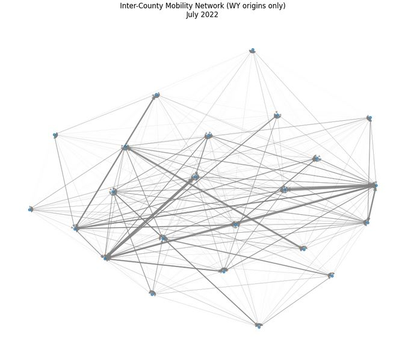
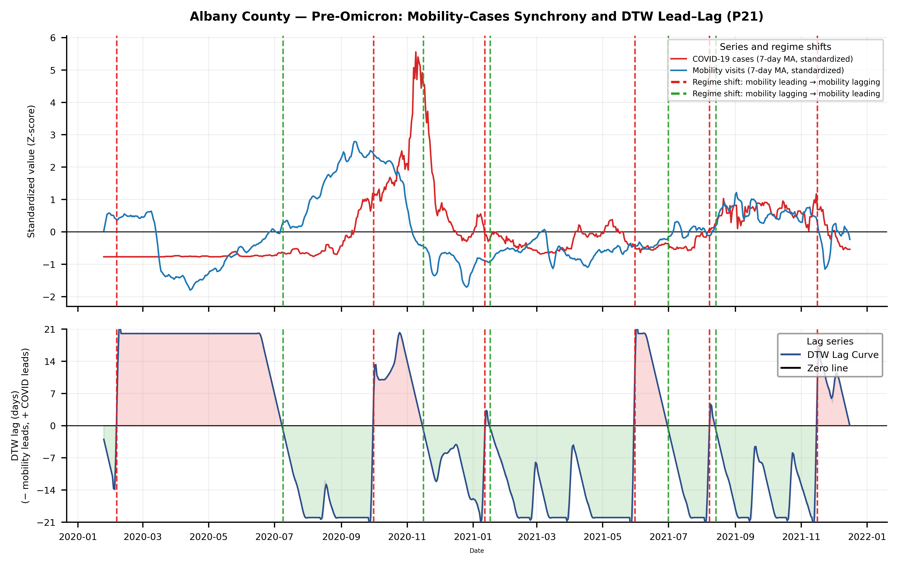
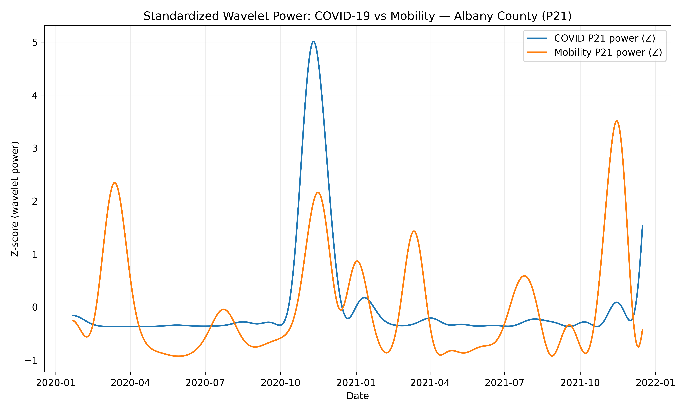

COVID-19 Mobility–Transmission Lead–Lag Analysis in Rural Wyoming
Spatiotemporal dynamics of human mobility and COVID-19 spread across Wyoming counties.
Overview
This study investigates how human mobility patterns are temporally linked to COVID-19 transmission dynamics across rural Wyoming counties. Using large-scale proprietary Advan Neighborhood mobility datasets alongside daily county-level COVID-19 case counts (2020–2023), the analysis examines dynamic lead–lag relationships between second-order behavioral and epidemiological signals.
Research Question
How are human mobility patterns temporally linked to COVID-19 transmission dynamics across rural Wyoming counties, and what dynamic lead–lag relationships exist between second-order behavioral and epidemiological signals?
Methods
These signals are extracted using a continuous Morlet wavelet transform to capture dominant 7-, 14-, 21-, and 28-day periodic components, representing weekly to monthly patterns in mobility and reported infections.
To quantify temporal alignment, a constrained Dynamic Time Warping (DTW) approach was applied, allowing flexible alignment without assuming a fixed lag. From the DTW alignment path, key metrics—median lead–lag, normalized distance, and mobility-leading proportion—were computed across multiple periodic scales for pre- and post-Omicron periods.
These features were standardized and used in hierarchical clustering (Ward’s method) to identify groups of counties with similar mobility–transmission patterns.
To explain these spatiotemporal clusters, a statistical modeling framework was developed integrating county-level socioeconomic variables and mobility network metrics. Using exhaustive feature selection with Leave-One-Out Cross-Validation (LOOCV), the best-performing model achieved 87.0% accuracy and an AUC of 0.833.
Key Findings
Clear spatial heterogeneity was observed in mobility–transmission lead–lag structures across Wyoming counties. Several regions consistently exhibited mobility as a leading indicator of COVID-19 case increases, while others showed delayed or weak coupling patterns.
Hierarchical clustering revealed distinct spatial regimes of mobility and transmission interaction, indicating that counties do not respond uniformly to changes in human movement. These regimes reflect underlying differences in regional dynamics, including economic structure and mobility connectivity.
Statistical modeling identified the employment–population ratio, mining activity, and betweenness centrality as the primary drivers of cluster differentiation, highlighting the combined influence of socioeconomic conditions and the mobility network structure.
Bootstrap analysis (B = 1000) confirmed the robustness of these relationships, with consistent effects for employment and mining variables, whereas PageRank showed weaker and less stable effects across resampled models.
Impact & Applications
This study provides a data-driven framework for understanding how mobility and disease transmission interact across rural regions, enabling the identification of spatial early-warning signals and supporting targeted public health monitoring and intervention strategies in underserved and environmentally vulnerable communities.
Results

County-level mobility network graph

County-scale Spatial clustering patterns

Wavelet-based temporal signal detection

Regime Comparison of Mobility–COVID Temporal Lead–Lag Signals

Periodic signal of movement and COVID signals

Top 10 counties with highest betweenness centrality